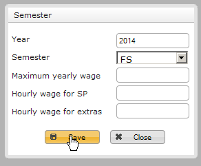
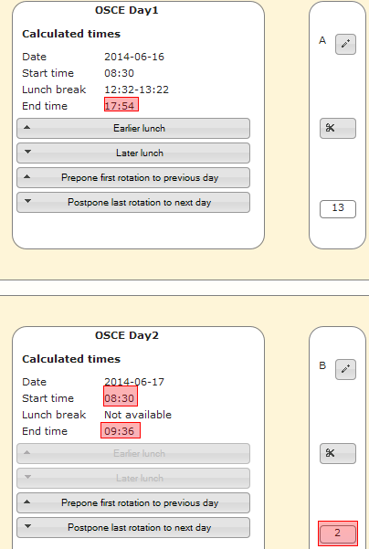
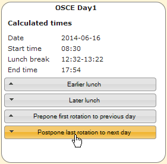
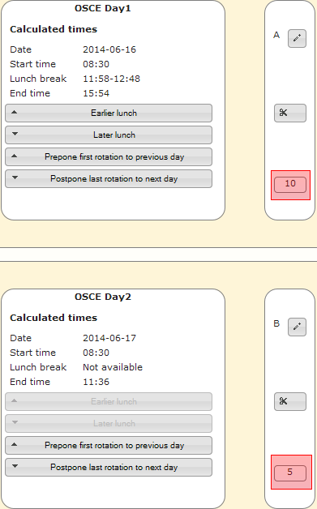
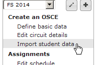
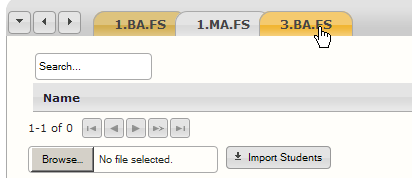
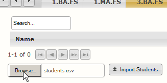
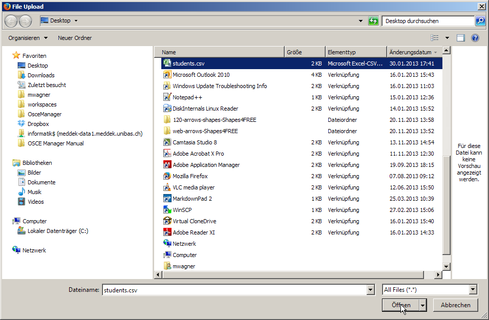
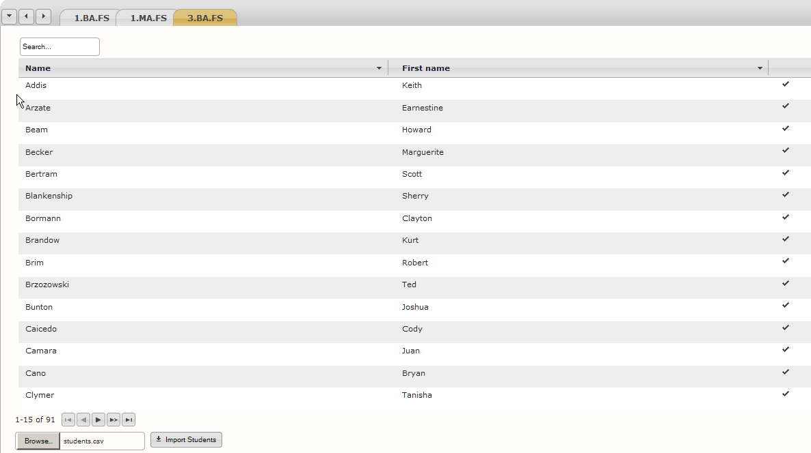

The OSCE Manager Manual
The OSCE Manager Manual is a user guide for the OSCE Manager. It mainly serves as a reference guide that should cover most of the questions that may arise in everyday use of the application. For a general overview and quick introduction to the OSCE Manager we advise you to have a look at the 12 minute introduction video.
Like the OSCE Manager, the manual is written and maintained by the Medical Faculty Of The University of Basel For any inquiries regarding this manual, please write an email to .
1 Introduction and overview
As has been mentioned in the abstract, we suggest to have a look at the introduction video. It guides you through the process of organising an Objective Structured Clinical Examination step by step and thereby gives you an overview of all the modules of the OSCE Manager and how they roughly interact with each other. This video is the quickest way to delve into the matter.
This first chapter of the manual will give you a more general overview about what the OSCE Manager consists of. First the rough architecture of the system the software runs on is explained without getting too technical. This may help you to better understand certain features of the software. Furthermore we will explain the basic user interface of the application as well as how the software is divided up in several modules and how they interact.
1.1 System Architecture
The OSCE Manager as a whole basically consists of two seperate applications, that would usually be running on different servers. The first is the OSCE Manager itself, while the second application is the SP Portal, which is intended to be accessible via the internet, so as to allow simulated patients to fill in their personal details or participate in surveys. In figure 1-1 you see this concept graphically illustrated.

1-1: Graphical illustration of OSCE Manager and SP Portal architecture.
The data synchronisation between the two applications is initiated manually by a user of the OSCE Manager. The SP Portal application only stores simulated patient data temporarily, for as long as it is required to be accessible by the SP. Typically both applications are installed on different web servers and therefore are accessed via different URLs, for example the OSCE Manager may be accessible through https://osce-manager.private.myuniversity.edu whereas the SP Portal could be reachable by e.g. entering https://sp-portal.myuniversity.edu in your web-browsers address bar.
Important: Please be aware that the above URLs are only examples! Please ask your system administrator for the URLs that are used at your institution!
1.2 Main Application Layout
When you start the OSCE Manager you will be confronted with the SP management view. As soon as you click on an entry of the table you will see that the view is roughly divided into four segments. Illustrated in figure 1-2 is said perspective with the four segments, colored in red, green, blue and yellow for ease of explanation.

1-2: The main user interface segments of the application, which are colored red, green, blue and yellow in this screen shot.
The main components are:
- Red: The applications navigation menu where you select the actions you want to perform.
- Green: In the section to the right of the navigation you often have a table like the one here. There are tools available to filter, navigate and sort the table.
- Blue: If there is a table in the green area, often there is the possibility to see more details for the objects that are displayed in the table by clicking on them. If this is the case, you will see more details pop up in the blue marked area.
- Yellow: Throughout the whole application you have the possibility to change the display language as well as the table size. The table size is the number of entries that is usually displayed per page in tables.
You will mostly only use the left mouse button for clicking. There are very few instances where the right mouse button is used.
1.3 Modules
The OSCE Manager consists of several modules that play together. In the navigation menu of the software you see several boxes that basically make up these modules. In figure 1-3 you see all the elements of said menu.

1-3: Navigation menu of the OSCE Manager.
The elements SP, Examiners, Role, OSCE Administration and System Administrations are outlining everything that is possible in this application.
- Under SP, the simulated patient database can be found. There, you have the possibility to enter SP data, search for SPs, create and edit a custom questionnaire that you want SPs to fill out and you may also define body attributes that SPs may have.
- Examiners contains the database of examiners, that could participate in OSCEs. It is structured similar to the SP database, but is less sophisticated. In the OSCE Manager, examiners belong to clinics, which are also managed within this module.
- The Role menu entry is basically a database of all the roles that could be used or played by an SP during an OSCE, wehereas each role consists of everything required to discribe it such as scripts, checklists, inventory lists, etc. The roles are categorized and these categories are managed within this module as well.
- In OSCE Administration you plan, schedule, execute and analyse the OSCE. For each semester in which you want to organize OSCEs you usually go through a step-by-step progress that is mirrored by this menu.
- System Administration is a collection of things and tools that are not used on a daily basis. These are mainly masks for entering specific data into the database that has not to be regularly used or updated, such as the rooms which could be used for conducting an OSCE within.
Detailed descriptions of the modules can be found in the respective chapters.
As mentioned in chapter 1.1, there is also the SP Portal, which could be considered a module as well, but is actually rather a tool that helps you work with the modules SP and OSCE Administration.
2 The simulated patient database
The simulated patient or SP database is a core part of the OSCE Manager application. Stored within it are all the SPs that did or will participate in an OSCE. This chapter focuses on working with said database and explains what can be done with it. Note, that some functionality is aided by the SP Portal which will be explained in chapter 6.
2.1 SP table view
When opening the SP database view by clicking on Simulated patients in the main menu, you will be confronted with a table which contains all the SPs that are stored in the database. The table has some features which you will find throughout the OSCE Manager in other tables.
In figure 2-1, highlighted in blue, you see the list of SPs that are in the database. When you click on a single entry of this table, you get to see the detailed information about an SP in an area that will scroll into the screen on the right side.
The number of records you see is governed by the table size setting in the top right, marked in orange. you can use the pager on the right side below the table (highlighted in yellow) to browse to the entries that can not be displayed on the first page. Marked in red, you see the quick search field and search settings that can be used for simple text search of the database. The green column bar allows you to sort the table and select the columns to display.

2-1: The SP database table with the quick search field (red), column bar (green), the tables contents (blue), the "Add SP"-button (pink), the pager (yellow) and the advanced filters (turquoise).
If you want to create a new entry in the database you click on the Add SP button  (highlighted in pink). This will present you with the SP editing view. Finally, there are also advanced filtering features that allow you to narrow down the search even more.
(highlighted in pink). This will present you with the SP editing view. Finally, there are also advanced filtering features that allow you to narrow down the search even more.
2.1.1 Sorting
The column controls pictured in figure 2-2 allow you to sort the table by any column available.

2-2: Column controls
Example: Sorting a table by an arbitrary column
To sort the table by a certain column:
- Click on the name of the column by which you want to sort the data!
- You now see, that the table is sorted by first name. This is also indicated by the arrow besides the column name. To reverse the sort order, simply click the same column name again.
- As you can see, the sort order has been reversed.


Additionally, you have the possibility to select the columns which you want to display in the table.
Example: Selecting the displayed columns
To display additional columns:
- Click on the arrow button on the right side of a column.
- You now see a list of all columns that are available for display.
- In this list, click on the checkbox besides the column names to activate or deactivate the columns you want to show / hide in the table.


2.1.2 Quick search
The quick search window on the top left of the SP table allows you to search for any text within the SP records. As soon as you enter any text in the search field, the table will be filtered and only SPs that match your search will be shown.
Example: Searching for an SP by name
To search for an SP by name, e.g. you search for Mr. Henry Jones.
- Click the search box on the top left of the screen.
- Enter their name, e.g. Henry and you will see the results almost immediately.


Besides searching for SPs by name you can also search by other attributes.
Example: General use of quick search
To search for an SP by city, follow these steps:
- Move the cursor over the wrench symbol to the right of the search box
.
- Click the columns in which you want to search, e.g. City.
- Enter the search term you want to search by, e.g. the name of the city. As in the previous example you will see the results almost immediately.


As you could see in the two examples you can search the following columns via the quick search box: Name, First Name, Postal code, City, Street, Telephone, Telephone 2, Mobile, Email, Bank, BIC, IBAN, Comment.
A click on the arrow symbol  executes the search once again.
executes the search once again.
2.2 Advanced filters
Since there are many non-textual fields that characterise an SP in the database, more sophisticated search methods are available. With the advanced filters that can be found below the SP table, it is possible to filter the table by numeric ranges, gender, profession or even custom information defined in the questionnaire.
This filter functionality can be found in the role management chapter again. There, the exact same filters can be used to define which criteria a simulated patient must fulfill to be suited for a certain role.
To filter the table with one of the advanced filters, click on one of the available filter buttons shown in figure 2-4.

2-4: The advanced filters, available for searching SPs
After you click on one of the buttons a dialog window comes up. For example, if you click on the numeric filter button  , a dialog like the one shown in figure 2-5 appears.
, a dialog like the one shown in figure 2-5 appears.

2-5: The numeric filter box with the linkage field, parameter field, comparison field and the value field.
Most of the filters and filter options are rather straight forward and don't need a lot of explanation. The ones that do are treated in the following three chapters.
2.2.1 Linkage
The leftmost dropdown menu from figure 2-5 is the same for all of the filter boxes. It contains the linkage operation which defines how the filter is applied in conjunction with the preceding filter. The two possible values are:
- OR: means that an SP has to match with either the preceding filter or the filter that is getting the OR-linkage attribute.
- AND: defines that the criteria of this current filter and the criteria of the previous filter have to apply both.
Note, that the order of criteria is relevant for the linkage-attribute. The linkage setting of the first-defined filter is irrelevant, but the last criterion is always the strongest.
Example: Using multiple search filters
You want to search for female SPs that are either more than 60 years old or younger than 30 years old. Thus, you'd follow these steps:
- Click on the gender button
. In the menu that appears you select the gender to be female.
- Now you select women who are younger than 30. To do that you click on the numeric filter button
- Finally, you do the same as in item two, but now you select the larger than sign (>), enter the number 60 and select the linkage to be of type OR.
If you have a look at the result now, you will notice that there are male SPs in the result. This is because the last criterion is linked with OR-Linkage, which basically makes this selection to be: Show all SPs who are female and younger than 30 years old, or show all SPs who are older than 60 years old.
Instead we wanted a selection which shows all SPs who are younger than 30 years old or older than 60 years old and are female. To achieve this now, we continue:
- In the criteria table that appeared, click on the trash symbol
besides the filter where you filtered by gender.
- Now we add the same filter again at the end of the list, as described in item 1. (Click on the gender button. In the menu that appears you select the gender to be female.)
Now you see the results you actually wanted.
The SP database, showing only SPs who are female and either younger than 30 years old or older than 60 years.


2.2.2 Comparisons
Most filters have a comparison operation, where in the simplest case you can just select whether an SP should have a certain attribute or not. For example when using the Profession-filter, you can select if the SP should have a certain profession, but it is also possible to select that he must not have a certain profession.
The numeric filter allows for mathematical comparisons such as equal (=), not equal (≠), greater than (>) and less than (<). Similarly the Languages filter allows the same comparisons to language skill levels.
2.2.3 Attribute and Questionnaire filters
Whereas most of the filters are rather straight forward to use, the Attributes and Questionnaire filters are special. The Attributes filter, shown in figure 2-6, is used to search for user definable attributes (see chapter Define and use attributes). It is easy to use, as it only shows a simple drop-down menu from which you can select all of the available attributes.

2-6: The attributes filter popup. The drop-down menu shows all the attributes that are available for selection.
The more interesting filter is the Questionnaire filter. In it, the questionnaire can be searched. This is a collection of user definable questions, that each SP can answer. For more information on how to use the questionnaire, plese see the chapter in question. With this filter it is possible to efficiently search this questionnaire. When you first click the Questionnaire filter button, you are confronted with a text field into which you can type a keyword to help find the question (see figure 2-7). As soon as you enter something into this textbox, a menu with matching questions appears.

2-7: The questionnaire filter after entering a letter in the suggestive search field, showing matching suggestions
After selecting a question, you can define what answer you are looking for. Depending on the type of the question, either a drop-down menu appears (see figure 2-8) for multiple choice or yes/no-questions, in which you can select the answer you are looking for, or in case of an open question answered with written text, you can enter text in a textbox (see figure 2-9).

2-8: The questionnaire filter after selecting a multiple choice question, showing the possible answers in a drop-down menu

2-9: The questionnaire filter after selecting an open question, showing a text field in which text can be entered
Example: Searching SPs by questionnaire items
Important: Note, that you have to have these questions defined in the questionnaire before this example works. See chapter The questionnaire.
You want to list all the SPs that wear glasses and are motivated by money. This means that the questionnaire has to have some questions defined, which cover these two points. In our example the two following questions are predefined:
- Do you wear glasses?
- What motivated you to participate in our simulation patient program?
The first of the above questions is a Yes/No question, while the latter is an open question.
To create the filters, follow these steps:
- Click on the Questionnaire button
.
- Enter the word "glasses". A selection box should appear, displaying every question in the database that contains the word "glasses". In the example there is only one available, the question Do you wear glasses, which you now select by clicking it.
- Make sure that the two drop-down-menus are set to answered with and Yes, then click
Add.
- Now to add the second filter you click the Questionnaire button
- Enter the word "motiv" and select the question What motivated you to participate in our simulation patient program?.
- Make sure that the drop-down-menu reads ansawered with and enter the word "money" in the textbox. Then, click
Now you see all the simulated patients that wear glasses and answered the motivation-question with an answer containing the word "money".
SP database with all SPs wearing glasses and motivated by money


2.3 SP details view
As has been mentioned in chapter SP table view, as soon as you click on an entry in the SP table, you are presented with a view that presents all the details that have been recorded of the given simulated patient. In figure 2-10, this view is depicted with highlighted areas of interest.
The general controls on the top right of the screen, highlighted in red, allow you to change the status of the SP or delete the SP, synchronize the data on this SP with the SP Portal, go to the editing screen or print the SPs data.
In the area highlighted in green you have all the regular information about the selected SP. The information is divided up in several categories to not clutter the screen. In the bottom part (yellow highlight) you see the questionnaire for the current SP. Note that the questionnaire contents here are consisting of example data and can be customized to your liking (see chapter The questionnaire).

2-10: The SP details view with the general controls highlighted in red, the details tabs highlighted in green and the questionnaire highlighted in yellow.
2.3.1 Editing SP data
There are several types of data that can be edited. Let's concentrate on the SPs basic data first. The following example shows you how to change SP details. When you click on  Add SP below the SP table view or if you click on
Add SP below the SP table view or if you click on  Edit in the controls panel in the top right of the screen, the same mask will show. So the procedure for editing SP data or adding a new SP is basically the same.
Edit in the controls panel in the top right of the screen, the same mask will show. So the procedure for editing SP data or adding a new SP is basically the same.
Example: Adding a new SP or Editing SP basic data
We want to edit some basic attributes of the simulated patient Isaac Hausner. After we selected him in the SP table view by clicking on his name, we can edit his data by following these steps:
- Click on
- In the upcoming screen you can edit the name and contact data of the SP. For example you can change his email address.
- If you click on the tab particulars, you're able to edit additional information, such as birth date, height, weight, marital status etc. We can e.g. change his profession by clicking on the profession suggest box and clicking or typing a new profession.
- Editing bank account information works the same way. You can enter account number and bank address information in the entry mask. The country dropdown is the same type of dropdown menu as the profession and nationality boxes found in the Particulars tab.
- You may also add comments with custom formatting to each SP. These comments can also be searched using the quick search and can therefore be used to add custom information. The formatting options are a subset of those found in regular word processing software.
- After you have done your changes, click on
Save on the top right of the control panel. If you decided to throw away your changes, you can also click on
Cancel.


Additionally, there are some attributes that have to be edited by other means. These would be the Language skill, the attributes and the questionnaire. The latter two are treated in their own chapters.
You may want to have certain SPs who are able to communicate in certain languages. The language skills tab allows you to specifically define which languages a simulated patient is able to speak on what level.
Example: Editing language skills
You want to add language skills to a certain SP.
- Go to the Language skills tab in the SP details view.
- Select one of the pre-defined languages from the language drop down.
- Select the skill level at which the SP is speaking this language.
- Click on
- You will now see the language skill has been added. To delete it again, click on the


2.3.2 Status, deletion and synchronisation
In the SP database, each SP has a status. There are several statuses an SP can be in and these all have different implications which mainly show in the possible actions of the control panel. In the following list, the implications of each status is described.
- Active: This is the default status and means, that the SP is available for OSCEs and can be modified in any way you like.
- Inactive: An SP can be excluded from participating in future OSCEs by deactivating the SP. This means, that he cannot be selected in any new OSCEs and his data can not be exported to the SP Portal
- Anonymized: After an SP has decided that he does not want to take part in any OSCEs anymore but he has been in OSCEs in the past, the SP can be anonyized. This means that any personal data of the SP gets erased.
- Exported: This status indicates, that the SPs personal data is currently accessible through the SP Portal and to prevent inconsistencies the SPs data can not be edited.
Now a few examples follow to help you with actions that are relevant to the statuses.
Example: Deleting / anonymizing an SP
To delete an SP, follow these steps:
- After you selected the SP to delete from the table, click on the trash icon Delete button on the right side of the SP controls panel.
- You will be presented with a pop-up that asks you for confirmation. In this pop-up, click "OK".
If the SP has already been assigned to a role in an OSCE in the past, the SP cannot be physically deleted from the database. Instead, all SP data will be anonymized (replaced with xxx).


Example: Deactivating and reactivating an SP
- If an SP should be deactivated, click on the
- After the SP has been deactivated, you can choose to reactivate the SP again by clicking on the
Activate button to reactivate the SP.


Example: Synchronize SP data with the SP Portal
If you want to synchronize an SPs personal data with the SP Portal, follow these steps:
- After you've made sure that the SP is in an active state, click the
Sent To DMZ button. This sends the SP data to the DMZ (Demilitarized Zone - in this case a server that is accessible publicly over the internet) so it can be accessed via the SP Portal
- if the export was successful, you will be notified.
- Now the SP can log in to the SP Portal and edit his data (see chapter 6)
- After the SP has come through and updated his details on the SP Portal, you can reimport the data by clicking on
Pull From DMZ to reimport the data.
- If the import was successful, you will be notified.


2.3.3 Define and use attributes
For SPs it is often desirable to exclude certain body parts from examination, e.g. if they are scarred somewhere or just don't feel comfortable with it. Defining such attributes could later on help in assigning suited SPs to roles.
There are three different types of attributes: scar, tattoo and Do not examine. Use them where appropriate - scar if you define a scar, tattoo if you define a tattoo and Do not examine if there is some other reason a certain body part should not be examined.
All the attributes can be found when you click on Attributes in the SP-section of the OSCE Managers navigation. You will be presented with a table showing all the predefined attributes and the option to add new attributes.
Example: Defining new attributes
To add new attributes that could be assigned to SPs, follow these steps:
- In the navigation menu on the left in the SP-box, select Attributes.
- You will now see a list with all the predefined attributes.
- Select the type of attribute you want to define; either scar, tattoo or Do not examine
- Enter the name of the body part and click on
- Finally, you see that the attribute has been added.


Example: Changing and deleting attributes
The last attribute you added to the list, a scar on the lower leg should be designated more clearly. To change it:
- In the list of attributes, click on the edit button
- A pop-up window appears in which you can now change the type of attribute or change its designation. After you've changed it to what you wanted, click the
- After you've saved the changes, they should immediately appear in the table. If you decide, that you don't need the attribute after all, you can delete it by clicking the


Example: Assigning predefined attributes
To assign attributes that have been previously defined, as shown in the two preceding examples, you have to follow these steps:
- After you selected a simulated patient from the SP table, click on the Attributes tab.
- In the auto-complete box on the bottom left, enter e.g. the word "scar". The box now shows all possible attribute choices containing the word "scar", i.e. it shows all attributes of the scar type. Now, select the appropriate attribute by clicking on the correspondant choice, e.g. "Scar Shoulder (left)".
- Click on the button
- You see, that the attribute has been successfully added to this SPs list of attributes.
If you want to delete the attribute from the SP, you have to click on the button with the trash icon:


Important: Please be aware that attributes are not synchronized with the SP Portal and thus can not be added by the SP himself!
2.4 The questionnaire
The questionnaire allows you to create a custom questionnaire that can be used to store additional data for each SP. Up to a certain extent it is possible to save any potentially relevant additional information that yout want to store for each simulated patient. Each question is grouped with other questions for structure and each question can be in the form of one of four types. Also it is possible to select if a question is visible for an SP in the SP Portal or not.
In the chapter attribute and questionnaire filters you already learned how data from the questionnaire can be used to search for SPs. This chapter explains how the questionnaire is structured and how the questionnaire can be filled in.
You will find the definitions part of the questionnaire, i.e. the place where you can add/edit questions and group them, in the SP-box of the navigation on the left.

The questionnaire definitions can be accessed by clicking "questionnaire" in the SP-box of the navigation
2.4.1 Structuring the questionnaire
The questionnaire has a simple structure. It doesn't just contain questions. Instead, the questuions are grouped. The groups are ordered and the questions within each group are ordered as well. That means you can define the sequence in which the questions will be presented to the SP.
The screen you are initially presented with only shows you the groups that have already been defined and some search boxes and controls. The following screenshot has annotations explaining what you see in the questionnaire definition view.

Overview of the questionnaire definition view
2.4.1.1 Adding a new group
To add a new group, simply enter the name of the group you want to create in the text field on the bottom of the screen and click the  Add title button.
Add title button.

2.4.1.2 Group controls
Each of the groups has the same types of controls. These are illustrated and quickly explained in the following screenshot.

Each of these controls refers to an action on the group it [the control] is found upon.
- To expand the group and show the questions, click anywhere on the title or the arrow on the left side.
- To change the title, click the pencil button. A little popup will appear in which you can change the name.

- If you want to delete the entire group, click on the trash bin icon. Be aware that you can only delete empty groups!
- To add questions to a group click on the Add question button.
- To reorder the groups, click on the arrow buttons on the right side. The up arrow moves the current group of questions up, so it appears higher in the list than the preceding group. The down arrow does the opposite; i.e. moves the current group down so it appears after the currently subsequent group.
2.4.1.3 Managing questions in groups
If you click on the name of a group that has questions in it, the group is expanded and all the questions within the group are shown below the title. All the details of the question can already be seen in this table as shown in the screencap below.

- The field on the left shows the number of the question. If you want to move a question to a certain spot within the list, you can enter the number you want the question to have in this field.
- The icon shows the type of question:
 Multiple choice question with multiple selections allowed.
Multiple choice question with multiple selections allowed. Multiple choice question with a single selection allowed.
Multiple choice question with a single selection allowed. A Yes/No question.
A Yes/No question. An open question with a written answer.
An open question with a written answer.
- You see the question text, i.e. the question that is being asked.
- In case of a multiple choice question you also see all the possible answers.
- On the right side there are the arrows that allow you to reorder the questions in the same way as can be done with the question titles.
2.4.2 Adding, editing and deleting questions
If you click on a question such as the one seen in the , you will be presented with the question details screen. There you see the details of the question presented once again, as well as the
 Edit and
Edit and  Delete buttons.
Delete buttons.
To delete a question, click on the  Delete button.
Delete button.
To edit a question, click on the  Edit button.
Edit button.
To add questions to the questionnaire, click on the  Add question button as described above. You will be presented with a view in which you can describe a new question. If you clicked on the
Add question button as described above. You will be presented with a view in which you can describe a new question. If you clicked on the  Edit button of an existing question instead, you will see the same view, except that there is already some data present.
Edit button of an existing question instead, you will see the same view, except that there is already some data present.

The fields you are presented with are:
- Type: select the type of question i.e. the way the question should be answered. See Types of questions for more info.
- Question: This is the text that will be displayed and should be answered by the SP (or a staff member if the question remains private).
- Belongs to title: This allows you to change the group to which the question belongs to.
- Previous question: As of the writing of this document this does not work and has no influence on anything.
- Send to DMZ: If this is checked, the question will be synchronized with the SP Portal, so the simulated patient is able to fill out the data by himself.
2.4.2.1 Types of questions
There are four types of questions to select from. The following list quickly explains the types of questions. Please note that the screenshots that illustrate these types are taken from the SP details view. The type defines the way the question can be answered. The following types are available:
- Open question: The answer to this type of question is written text. The user who fills out the questionnaire will be presented with a text field to write text in.

- Multiple-Choice with multiple selection: this is a multiple choice question for which one can select multiple answers at the same time by clicking on checkboxes.

- Multiple-Choice with single selection: this is a multiple choice question for which it is only possible to select one single answer.

- Yes/No-Question: this is a simple type that can only be answered by selecting either Yes or No.

2.4.3 Answering questions
Of course the questions can be answered after they have been defined. This can be done by the simulated patient himself, if he has been exported to the SP Portal. For details about answering questions in the SP Portal, see the chapter SP Portal!
This chapter explains how the SP questionnaire can be filled in via the OSCE Manager. To start, go back to the SP table view and select the SP for which you want to fill in the questionnaire. On the bottom of the now visible SP details view you see the questions grouped into the defined groups as explained in the previous chapters.

The questionnaire part of the SP details view with the questions grouped.
In this view you see all the informations about the currently selected question group.
- On the top you can select the group of questions you want to have displayed by clicking on the appropriate tab. Note that these are the same groups as they were defined earlier.
- To the left of the tab selection you have arrow buttons which help you to navigate the tabs. They are mainly necessary if there are too many tabs to conveniently display. you can use them to scroll the tab bar to the right, to the left or to select a tab via drop-down menu.
- When a tab is selected, all the questions in the corresponding group are displayed in the table below. Its columns contain:
- An indicator whether a question has been answered or not . This is also indicated by the background color. Orange/yellow indicates unanswered questions and white/grey background indicate answered questions.
- The questions themselves.
- The answers whereas the possibilities to answer the questions depend on the type of question.
- A field that allows you to add comments. Please be aware, that comments can not be added by the SP in the SP Portal but only by a staff member in this mask!
- An indicator whether a question has been answered
- On the bottom you have a search field in which you can type a keyword to find a question containing this keyword.
- Furthermore there are two checkboxes that allow you to select wheter to display only answered, unanswered or both types of questions. Please be aware, that as of writing this document, the default is to only display answered questions!
3 The examiner database
The examiner database is comparable to the SP database albeit with a reduced feature set and for managing examiners instead of SPs. The functionality is basically similar to the SP database and as such, if you are familiar with that, you don't need any further explanation here.
4 Role management
In this part of the OSCE Manager application you can manage roles. Roles encompass everything that is tied to one station in an OSCE where one particular skill is tested and usually an SP plays the role. All the roles that will be resorted back to during an OSCE have to be previously defined here. If you want to change an aspect of a role, such as the SPs script, you usually just edit the role and don't create a new role just foor that.
A quick sidenote about terminology: The role basically describes every aspect of what will be called a station during an OSCE. Since the role is universal (i.e. it has nothing to do with a specific room or OSCE), we do not call it a station. The term station will be used when organising an OSCE and assigning a role to a room in which the role will be played. Basically you can see the roles as tasks for the students.
4.1 Disciplines, skills & roles
Roles are grouped into disciplines and skills. Each role tests one particular skill, which in turn belongs to a certain discipline. For example there may be a discipline Ophthalmology within which there are several skills that you may want to test, e.g. Ocular Tonometry and Ophtalmoscopy.
Through this categorisation of roles it is easier to find the right roles when you start organising an OSCE.
4.1.1 Defining and editing disciplines
To get an overview of all the available disciplines, click on Disciplines & Skills in the Role group of the OSCE Managers main menu.

Disciplines & skills
You will be presented with an overview of all the disciplines in a table that is functionally similar to e.g. the attributes table. You have the possibility to add new disciplines by entering a name for the new discipline in the bottom left box and click  Add discipline. It's possible to edit the names of defined disciplines by clicking on the corresponding edit button
Add discipline. It's possible to edit the names of defined disciplines by clicking on the corresponding edit button  or deleting disciplines by clicking on the delete button
or deleting disciplines by clicking on the delete button  . Note that you can't delete disciplines that have any skills assigned!
. Note that you can't delete disciplines that have any skills assigned!

Defining and editing disciplines
Of course it is also possible to filter the table by entering a discipline name in the search box on the top left of the screen.
4.1.2 Defining and editing skills
To define and edit skills, first you must click on one of the disciplines in the table described in the previous chapter.
You will be shown another table where you see all the skills associated with the selected discipline. In the screenshot below for example, you see all the skills that are defined within the discipline of First Aid.

All the skills that can be found in the First Aid discipline.
As usual, to edit a predefined skill, click on the edit button  and to delete a skill, click on the delete button
and to delete a skill, click on the delete button  . Note that you can't delete skills to which a role has already been defined!
. Note that you can't delete skills to which a role has already been defined!
To add a new skill, click on the  Add skill button. You will be presented with a dialogue as shown in the screenshot below.
Add skill button. You will be presented with a dialogue as shown in the screenshot below.

Defining a new skill
There are three fields you have to fill in that define the skill:
- Skill: this is the name of the skill.
- Max. students: The maximum number of students that an SP can endure when he plays a role to test this skill. This will force the OSCE Manager to make a change of SP during an OSCE when this number of students has been reached for an SP testing this skill. (*)
- Academic year: The academic year in which this skill will be tested in an OSCE (BA.1 - BA.3 or MA.1 - MA.3 for Bachelor and Master respectively).
4.2 Role table view
In the navigation, when you click on Role definitions, you will see a regular table view, where all the available skills are listed and for each skill, separated by commas, all of the available roles for a skill. The first of the following two screenshots shows you how to access the role definitions screen and the second capture shows you the view with some explanations in red.

Opening the role table view by clicking on "Role definitions".

The role table view
In this view, you have the following possibilieties:
- Using the search textbox and the search settings , you can search for roles by any criteria. (See Searching for roles).
- The table can be exported to a .csv file.
- You can add a new skill using the Add skill button. If you do so, you will be presented with a dialog similar to the one shown in Defining and editing skills, except it also has a field to define the discipline.
- To edit or create a new role, click on a skill in the table.
4.2.1 Adding a new skill
If you want to add a skill in the role table view, first you click on the  Add skill button. You will be presented with a small dialog.
Add skill button. You will be presented with a small dialog.

Add skill dialog
All in all, the fields to fill in are the same as in the dialog shown in Defining and editing skills, except, that there is also a field to define the discipline. Please see this chapter for a short explanation on what each field does.
Please note, that you should fill in the discipline in any case, even though the application does not force you to!
4.2.2 Searching for roles
To search for roles, you can use the searchbox on the top left of the screen. There is a plethora of choices concerning what exactly you want to search, that is displayed when you open the search preferences menu by hovering your mouse over the  wrench icon.
wrench icon.

Searching for roles.
4.3 Role details view
In the role table view, if you click on a skill that already has an assigned role, you will be presented with the role details view, where you see all the data of the first role belonging to the skill. Below you see a screenshot with some explanations in red.

The role details view as seen when one role is defined for the selected skill
This details view can be mainly divided intio four parts:
- In the top you see several tabs, the above screenshot depicts 2 tabs, one designated "LOC A", and the second designated with a + sign. "LOC A" in this case is the acronym designating the currently selected role and the golden color indicates, that this is the currently selected role. To add a new role to the selected skill, you click on the "+" tab. Any further roles will be displayed in the tab bar, as soon as they have been defined.
- The basic controls on the title bar, to the right of the roles full name, contains some basic actions that apply to the role as a whole, such as viewing previous versions of the role, editing the basic information of the role, copying the role, printing the role or even deleting the role.
- The details tabs group all the information into appropriate categories:
- The top row of tabs is used for editing some basic information about the role, such as information about who wrote it, keywords to find it and in which OSCEs it has been used. Basically it consists of information that is mainly relevant to identify or find the role.
- The bottom row of tabs contains the information that actually is relevant for playing the role such as the checklist, exclusion criteria, scripts, etc.
4.3.1 Creating, editing or copying a role
There are three ways to access the editing screen for basic role information:
In the role table, you click on a skill to which you want to add a new role. If there are no roles present yet, you will be immediately presented with the mask where you have to fill in the roles' basic information.
If there is already at least one role present in the selected skill, you will have to click the "+" button on top.
 .
.If you want to edit the basic information of an existing role, you click on the
Edit button on the top right of the roles control bar.
After you've done one of the above steps, you will see the following view. Note: if you are creating a new role, most of the fields remain empty, of course!

The entry mask for a new role or editing basic information about the role
The mask that you see contains the following fields:
- Acronym: This is an abbreviation or a short hand name for a role. It will be displayed anywhere where a short hand name is more convenient. Please choose a name that makes it clear what role is meant.
- Role designation: This is the full and descriptive name of the role. This will be used whenever there is enough space available to display the full name of the role.
- Role type: There are three possibilites for this option:
- SimPat: designates a regular role, where a simulated patient has to be examined by the student.
- Supernumerary: a role where someone has to play a role which doesn't involve being examined.
- Material: a role where only some equipment is required, but no one has to play any role.
- Academic Year: This allows you once again to define in which academic year a role is to be tested in the OSCE.
- Skill: This allows you to change the skill to which the role belongs.
- Absolute number of backup-SPs: This is the absolute minimum number of SPs that would be on backup for this station during an OSCE.
- Proportion of backup-SPs vs. no. of circuis: The number of SPs that are on backup per circuit for this role. I.e. if this role is used on four circuits in parallel at an OSCE, the stated number of SPs times 4 have to be there as backups.
If you go to the checklist tab, you'll see only one field where you can give a designation to the checklist of this role.

Field for designating the checklist.
After you've defined all the basic information, you can click on  Save to store your changes. If you've been editing an existing role, you will be presented with a dialog. See next chapter
Save to store your changes. If you've been editing an existing role, you will be presented with a dialog. See next chapter
You can also copy a role. To do this, simply click on the  Copy button in the control bar on the top right side. This creates a copy of the current role.
Copy button in the control bar on the top right side. This creates a copy of the current role.
Important: Be aware that as of the time of writing this manual, checklists and scripts are not copied; that means that a copy of a role references the same checklist and script as the original, and changes to either of those will be seen from both roles.
4.3.2 Roles and versions
Over time you may want to change a role. Maybe you've had a role that you had in an OSCE for two consecutive years, but now you want to change some parts of it to not let the students' information exchange ruin the novelty of the role. Thus you decide to change some symptoms and therefore the SPs role and the checklist have to be changed. Now the OSCEs that were held in the past still used the role with the old checklist and script, and you want to keep it that way. Now what to do?
Luckily, the roles have versions. If you go to the editing screen and click on the  Save button you will be presented with the following dialog:
Save button you will be presented with the following dialog:

Selection between major changes or minor changes
You can select between:
- Major changes: This is what you would want to do in the above scenario. This effectively creates a copy of the role as it was and archives it.
- Minor changes: If you don't need to access an old version and just did some small changes, you select minor changes. This just overwrites the current version of the role.
Everytime you make a change that triggers the appearence of the version dialog, and you select either Minor or Major changes, the version number of the role gets updated. In case of a major change, the number before the dot gets bumped and the number after the dot gets reset to zero (e.g. from 1.2 to 2.0). In case of a minor change, the number behind the dot is increased by one.
Important: Note, that this dialog only appears when you either save changes, that you made in the
Since the role gets archived when you do major changes to it, you can still access old versions of the role if you want to by clicking the  Previous version button in the main control bar. If you are currently looking at an older version of a role you will notice this by the fact that you can't make any changes. To access future versions, click on the appropriate
Previous version button in the main control bar. If you are currently looking at an older version of a role you will notice this by the fact that you can't make any changes. To access future versions, click on the appropriate  Next version or
Next version or  Current version buttons.
Current version buttons.
4.3.3 Printing a role
To print a role, click on the  Print button. You will be presented with a small dialog where you can select what you want to print (shown below).
Print button. You will be presented with a small dialog where you can select what you want to print (shown below).

The role printing dialog showing you all the printable options.

The same dialog with the script selection dropdown menu expanded.
- Role Scripts: In this dropdown menu you can select whether you want to print scripts and if so, whether you want to print all the scripts or just the one for either the examiner, simulated patient (SP) or Station specific documents. (See role scripts for detailed information on these documents).
- Master data contains part of the basic role information, specifically the general identification of the role as seen in the Role tab on top.
- Room facilities: check this if you want to print the room facilities table.
- Checklist: tick this checkbox if you want to print the examiners' checklist associated with this role.
- Files: if you want to print additional files required or associated with this role, activate this box. (see chapter cards for information to additional files).
After you've made your selection of what you want to print, click on  Print. The OSCE Manager will create a PDF document that you then can download and print.
Print. The OSCE Manager will create a PDF document that you then can download and print.
4.3.4 Basic role information
This chapter focuses on the Role authors, Keywords, Learning Objectives and Past use of role tabs in the role view. The Role tab has already been covered in Creating, editing or copying a role.
4.3.4.1 Role authors
In the role authors tab, you have the possibility to list the people who participated in editorial activities of the role. There are two categories represented as tables to which you can add examiners from the examiner database; authors and reviewers. The intention is, that the persons responsible for writing the documents belonging to the role, are recorded as authors, while persons reviewing the rest are recorded as reviewers.

Screenshot of the role authors table with all the interaction possibilities explained
To add an examiner to either of the two tables, enter his name in the dropdown box on the top left or alternatively, just open the dropdown box and select the examiner by clicking his name. After you selected an examiner, click on either  Add author or
Add author or  Add reviewer, depending on the role he fulfills.
Add reviewer, depending on the role he fulfills.
To delete an examiner from one of the tables, click the corresponding delete button in the table  .
.
4.3.4.2 Keywords
This tab shows a table of keywords associated with this role. These are meant to be used as an aid for finding this role. When searching for roles it is possible to search by keywords. These keywords can be added in this view.
To add a keyword to the list, just enter the word you want to add in the dropdown / suggestive textbox on the bottom left of the table and click the  Add keyword button. To delete a keyword, click the
Add keyword button. To delete a keyword, click the  delete button that is on the same row as the keyword you want to delete.
delete button that is on the same row as the keyword you want to delete.

Screenshot of the keyword table with red annotations about the interface functionality.
4.3.4.3 Learning objectives
This allows you to categorize your roles into the learning objectives defined by the Swiss Catalogue of Learning Objectives. This feature is not yet working as we wish it would and thus will not be documented yet.
4.3.4.4 Past use of role
Past use of role is simply a table that lists all the OSCEs in which the current role has been used in the past. You have the possibility to limit the number of shown OSCEs by date.
4.3.5 Checklist
This is one of the core aspects of the role. This is the checklist that the examiners will fill out to evaluate the students during the OSCE. There is the possibility to print the checklist, so it can be filled out in paper form, or you can also export the checklist to eOSCE, an iPad application, that allows the examiners to fill out the checklists on a tablet computer.
In the screenshot below, you'll see a view of the checklist in a role about Loss of consciousness with colored annotations. You can see, that the checklist is divided into several sections that group questions or items, that belong together.

An example checklist with colored annotations.
- Name: Each checklist has a name that is displayed in the tab bar. See creating, editing or copying a role.
- Section: As mentioned above, the checklist is divided into sections. Each section consists of a section title, a description and contains questions. They can be ordered arbitrarily. Sections can be imported from other roles.
- Question: Each question (or checklist item) belongs to a section and consists of a question text, an instruction text and an option that marks the question as a question to mark a general impression. Furthermore, there are options and criteria belonging to each question.
- Options: Options are the possible options an examiner has to answer the question. Usually the options are ratings of the students performance in the topic covered by the corresponding checklist item.
- Criteria: These are a list of items that help the examiner assess which option to choose. Usually these are actions a student has to take to in order to fulfill a criterion.
4.3.5.1 Creating and importing Sections
To create a new section within a checklist, click on  the Add section button, that you find on the bottom of checklist. You will be presented with the dialog shown in the screenshot below.
the Add section button, that you find on the bottom of checklist. You will be presented with the dialog shown in the screenshot below.

The Add section dialog.
- Title: The name of the section. This will be displayed on top of the new section.
- Description: This text will be shown below the title to clarify the title.
After you've saved your new section by clicking on the  Ok button, you'll see your newly created section on the bottom of the checklist.
Ok button, you'll see your newly created section on the bottom of the checklist.

The newly added and empty section.
If you want to edit the section title or description, click on the edit button  .
.
If you want to delete a section, click on the delete button  . Note, that this deletes the section as well as all the questions contained within the section!
. Note, that this deletes the section as well as all the questions contained within the section!
If you want to import an existing section with all the quesions contained within it, click on the  Import section button on the bottom of the checklist. You will be presented with another dialog from which you can locate the section you want to import.
Import section button on the bottom of the checklist. You will be presented with another dialog from which you can locate the section you want to import.

The Import section dialog.
The dialog shown above simply lets you locate the section you want to add by specifying the role the checklist belongs to. This can be easily made by defining the discipline and actual role the checklist belongs to. In the section field you can select the section you want to import. Note, that you also have the option "All", which allows you to import a complete checklist.
After you've chosen the right list, click on the  OK button and you will see the newly imported section in your checklist.
OK button and you will see the newly imported section in your checklist.
4.3.5.2 Re-ordering sections.
There are two possibilities to reorder sections.
- As in the questionnaire, it is possible to click on the arrows besides the section titles to move a section up or down in the checklist.

The arrows to move a section up/down the checklist.
- You can use drag & drop functionality to achieve the same. To do this, move the cursor onto the section title until it changes into a cross-shaped cursor. Then click on the section header, drag it to the destination and let go of the mousebutton.

Animation depicting the dragging/dropping of one section
4.3.5.3 Organizing questions
This is comparably simple to the way sections are created or imported. To define a new question, simply click on the  Add question button in the section where you want to add the question to. You will be presented with the dialog shown below.
Add question button in the section where you want to add the question to. You will be presented with the dialog shown below.

The Add question dialog.
- Question: This is the actual checklist item that the examiner has to answer and will usually be used for the students evaluation.
- Instruction: This is additional information that will be printed in a smaller font below the questions and is meant to be used for additional instructions.
- Is Overall Question: This checkbox is used to mark questions that are intended to summarise the assessment, such as: "How was your overall impression of this student?"
Basically the same dialog will be shown if you choose to edit a question by clicking the  edit button.
edit button.
To import a question the procedure is similar to importing sections. Simply click on the  Import question button in the corresponding section and you will be presented with a dialog that lets you specify the role, section and question you want to import. Note that you can only import questions from the same skill!
Import question button in the corresponding section and you will be presented with a dialog that lets you specify the role, section and question you want to import. Note that you can only import questions from the same skill!
Furthermore it is also possible to reorder questions the same way it is possible to reorder sections, either by simple drag and drop or by clicking the "move up" / "move down" arrows.

Animation showing the reordering of questions by using drag & drop.
Note that you cannot move a question to another section using this method. If you want to move a question to another section, use the Import question functionality!
To delete a question, click on the corresponding delete button  .
.
4.3.5.4 Checklist options
Options are the available choices the examiner has to answer a question in the checklist. It is important to note that depending on how these questions are configured, the choices the examiner makes do have immediate influence on the number of points a student can achieve.
To add a new option, click on the  button in the option box within the question you want to add the option to.
button in the option box within the question you want to add the option to.

Adding a new option to a question
When clicking the  button, you will be shown the dialog below.
button, you will be shown the dialog below.

The add option dialog.
- Option: This is a textual description of the option that helps the examiner assess the student. This is usually some textual description of how well the student has managed to fulfill the criteria for this question.
- Value: This is the actual number of points that the student will achieve in this checklist item if this option is selected. These points will be used for the final evaluation and therefore for assessing whether a student passed the OSCE or not.
- Criteria count: For certain types of questions, the student has to fulfill a certain number of criteria. If this is such a question, you should select the number of criteria that the student has to fulfill in order to achieve this option.
The display order of options can be adjusted via drag & drop. They can be edited  or deleted
or deleted  by using the appropriate buttons.
by using the appropriate buttons.
4.3.5.5 Checklist criteria
These criteria are meant to help the examiner evaluate the student. These are simple keywords that will be shown along with the questions and they are used to check whether the student did implement all the important steps. For example when the student has to assess the reasons of a loss of consciousness in an SP, he has to ask certain questions, like if there were previous episodes, previous head injuries, if it involved vomitting, etc. Together with the criteria count these criteria guide the examiner to correctly evaluate the students.
To add a new criterion, click on the  button in the Criteria box.
button in the Criteria box.

Adding a new criterion.
You will be presented with one simple text box to enter the criterion in.

The add criterion dialog.
Simply click on the  OK button, as soon as you entered a valid new criterion.
OK button, as soon as you entered a valid new criterion.
To rearrange criteria you can simply drag & drop them in the same vein as it is possible with sections, questions and options. To edit or delete them, click on the appropriate buttons. 

4.3.5.6 Exporting checklists
As has been mentioned before, it is possible to export the checklists to an iPad application that allows the examiners to electronically fill out the checklist. In the context of an OSCE exam, this is usually done in the Export data to eOSCE menu item. But if you want to export only one single checklist to test how it looks in eOSCE on an iPad, you can click on the  Export checklist button in the bottom of the checklist.
Export checklist button in the bottom of the checklist.
This will create an .osceform file, that you can import into the OSCE-Admin software which belongs to eOSCE. Note, that this exported file only consists of the checklist and no students or examiners will be assigned whatsoever. For more details about export from OSCE Manager and import to eOSCE, see the appendix of this manual.
4.3.6 Criteria for SP-selection
In this tab, you can define the criteria an SP has to fulfill in order to be adequate to play this role. These criteria are exactly the same as the ones in the advanced filters in the SP database, so please refer to this part of the documentation to find out how they work.
Additionally, there is a possibility to add further criteria that can only be enforced by human intervention. That means, it is possible to add key/value pairs (text), that will be displayed along with the role scripts to help instruct the SPs.

The criteria view with the currently selected criteria. The criteria enforced by the OSCE Manager are seen in the top table whereas the manually enforced criteria are seen in the bottom table.
To add further criteria, enter a unique value into the first (key) field and any value into the second (value) field and click the  Add search criterion button on the right.
Add search criterion button on the right.
The further criteria can also be sorted using the up/down arrow buttons and they can be deleted using the delete button. 
4.3.7 Room facilities
In the room facilities tab, you can define what equipment needs to be in the room. In lots of cases, for example, there has to be a stethoscope and a divan bed present. All these objects can be added to this table. The table is meant to help organise the OSCE, so you can always check what inventory each room has to have.

Screenshot of the room facilities table.
To add a new object to the list, click on the  Add object button on the bottom of the table. You will be presented with the dialog shown below.
Add object button on the bottom of the table. You will be presented with the dialog shown below.

The add object dialog.
- Object designation: The name of the object that should be added to the rooms inventory. This is a suggestive dropdown box into which you can enter text and it suggests you the possible choices. All the objects that you want to be able to add to a rooms inventory have to be previously defined in the room facilities administration!
- Quantity: designates the number of this type of object that has to be used. Please note the implications that the Allotted to... item has to quantity!
Allotted to...: here you have several possibilities:
- Day: This means that the same object will be used for at least the whole day. This would be appropriate e.g. for a divan bed.
- Examiner: Each examiner receives his own object. This could for example be necessary for iPads, that are customised per examiner.
- Student: There needs to be at least one specimen for every student that participates in this room. Appropriate e.g. for a pair of rubber gloves.
- Patient: Items that need to be changed for each SP.
Of course, once again it is possible to delete entries in this table by clicking on the delete button  .
.
4.3.8 Cards
The term cards stems from the fact that for certain roles in OSCEs, cards were used to convey additional information to the student that could not have been given any other, such as e.g. how the eye would actually look if the SP would actually have some kind of disease. In that case the card would simply show a photograph of an eye that shows the desired symptoms.
Technically, in this tab you can simply store any kind of file that needs to be used in the station, such as image files, video files or what ever else may be needed.
A first glimpse of the table shows you which files have already been uploaded. You have the possibility to re-order the table by clicking the appropriate up / down arrow buttons and you may download files that have been uploaded by clicking on the download button  . To delete files, as usual, click on the delete button
. To delete files, as usual, click on the delete button  .
.
If you want to upload a new file, click on the Browse... button to locate the file you want to upload on your hard disk, add a description in the text box and click the  Add card button.
Add card button.

Adding a new file to the list of cards.
4.3.9 Role scripts
This section allows you to create role-specific rich text documents or tables, that can be printed along with everything else from the role. This functionality is mainly used to add scripts for SPs, task descriptions and possible additional documents, such as maybe additional instructions for the examiner.
When you click on the Role scripts tab of a role, that does not have any role scripts assigned yet, you have to choose what kind of documents this role requires. This is done by selecting a template of document components. These document components describe who needs what document and can be created / edited in the system administration part of the application. In this manual I work with components I named "Default Role Documents", that consist of a task description, a script for the SP and additional instructions for the examiner.
Note, that these document components first have to be defined in the menu item Document components. If there are none defined yet, in order to create role scripts you have to define the components first!
To get started, select the document components you desire for this station in the dropdown suggestive search box and click the  Select document components button.
Select document components button.

Selecting document components.
You will be presented with an overview of the documents that are contained within the selected component. In the following screenshot you will see this view with colored annotations.

Role scripts view with empty role scripts
What you see in this perspective are several things. All the documents that are contained within the selected document component can be seen. Each of these documents does have:
- A title / description. This should tell you what this document should contain. In the example above we have e.g. "Task description" which is a pretty obvious hint.
- A box containing the intended audience of this document. This can be used when printing the role, to only print what you actually need. Maybe you have trainings for simulated patients for which you already need the scripts for the SPs. Then you only print the documents that are designated with "SP".
These last two items have to be predefined in the document components. The only thing you can actually do here is:
- Change the document components that this role uses by selecting another document component template from the dropdown menu on the bottom of the screen and clicking Select document components.
- Edit the actual documents by clicking the Edit button for the appropriate document.
When you edit a document by clicking the  edit button, you will see a rich-text editor such as the one you already saw in the edit SP view. It's feature-set is just a limited set of the ones found in general word processing software. After you're done editing the document, click on the
edit button, you will see a rich-text editor such as the one you already saw in the edit SP view. It's feature-set is just a limited set of the ones found in general word processing software. After you're done editing the document, click on the  save button to save your changes. You will be asked whether this is a minor or major change to the role (see Roles and versions for explanation).
save button to save your changes. You will be asked whether this is a minor or major change to the role (see Roles and versions for explanation).

Screenshot showing the rich text editor opened on a Task description
5 OSCE creation & administration
This chapter describes how you would approach to prepare the actual exam. To be able to seriously start organising an OSCE, it is assumed that you already prepared your database of simulated patients, examiners and role definitions.
If you intend to use one of the more complex types of stations, make sure that you prepared the roles for these appropriately.
As you can see in the menu on the left, whithin the OSCE Manager the whole process of running an OSCE is basically divided into 4 sections that you will usually go through in sequence:
- Create an OSCE: Define the framework of the OSCE, such as when it will take place, which academic year of students is going to take part, how long should it take, how many participants are there and what role will be played where.
- Assignments: After the framework is defined and a timetable is calculated, you can assign students, examiners and SPs to timeslots and fine-tune the schedules.
- OSCEManager Output: When everything is set, you can use the OSCE Manager to send invitations, print schedules or export data to eOSCE.
- Analysis: After the OSCEs are over, you can re-import data from eOSCE and statistically evaluate the results of the exam within the OSCE Manager itself.
5.1 Preparation
The OSCE Manager assumes that you are going to organise your OSCEs per semester. Thus, all the OSCEs that take place within the same semester are grouped together.
So to start organising your OSCE, you have to define a semester in which it will take place. You do this by defining year and semester.
Example: Define a semester
To define a new semester in which the OSCE will take place:
- Click on the
- In the window that pops up, you can enter the year in which the OSCE should take place and select the Semester (FS for spring, HS for autumn, Federal for federal exams). You can leave the other fields empty. 
- Make sure that the semester you just created is actually selected in the dropdown menu on the left. If not, please select it.

You may have noticed that the creation of the semester also contains three fields related to finances. These fields could be used if you would want to wage accounting for SPs within the OSCE Manager. So this would give you the possibility to define the hourly wages for SPs and extras as well as a limit of the yearly total expenses for SP/extra salaries. These values do not have to be filled in. If you decide to fill these in at a later point, you can do so by clicking the edit button  in the OSCE Managers main menu on the left.
in the OSCE Managers main menu on the left.
Note that the semester is just a tool used within the OSCE Manager to categorize OSCEs. There are will be no constraints concerning the time frame in which the OSCE can take place!
5.2 Create an OSCE
This chapter explains the process of creating an OSCE from scratch. One very important aspect is to schedule the OSCE and the creation of the time tables. The OSCE Manager assists you in lots of these tasks and can create the time table automatically. For this to work as intended though, you have to set some parameters of course. This chapter will help you determine the right parameters, so in the end you will have a time table for your OSCE.
5.2.1 Creating a new OSCE
After you've defined the semester in which the OSCE should take place, you have to define the framework first. To start with this process you click on Define basic data in the OSCE Managers main menu on the left. You will be presented with an empty table.
After clicking on define basic data in the main menu you see this empty table. To create a new OSCE click on the appropriate button.
You will be presented with the form shown below, in which you have to define the framework of the OSCE.
Form for defining the OSCEs basic data
In the screenshot shown above, there are several parameters - mainly numeric values - to be defined. Some realistic sample values were filled in. The OSCE Manager uses these parameters to later automatically calculate the time tables. Therefore it is of course also necessary to correctly define the times required for stations and breaks between stations.
The following list describes the available settings:
- Remarks: This lets you add a few descriptive words to an OSCE. Currently, there are menus in the application in which this is the only feedback the user has for identifying an OSCE. Thus, it is advised to use something descriptive that uniquely identifies this OSCE.
- Academic Year: Defines the academic year for which this particular OSCE will be conducted. If it targets e.g. students in the first year of their masters you would select "1. MA".
- Repetition of OSCE: This is used if you want to conduct an OSCE aimed at students who failed the actual OSCE. If you check the field "Is this a repetition of an earlier OSCE?", you select the original OSCE that the students failed via this suggestive search field.
- Max. circuits: lets you define the maximum number of circuits that will be run in parallel at this OSCE.
- Max. students: lets you define the maximum number of students that will take part in the OSCE.
- Max. number of rooms: set the maximum number of rooms that will be available to you for conducting the OSCE. This concerns only rooms in which there will be a station!
- Station duration: the time in minutes, that each student has available per station.
- Short break duration: A short break occurs always after the time for a station ran out. This is the time a student has to switch to the next station.
- Short break with SP-changeover: This is used where skills are tested that strain the SP significantly. Because of this there could be a necessity for an SP to be relieved mid-rotation and the short break could be too short to allow for this.
- Medium break duration: The medium break occurs between the end of the last station of a circuit and the beginning of a new circuit, i.e. if a group of students finished their OSCE rotation and the next group of students comes in for their rotation.
- Long break duration: This is a special sort of break that allows you to have longer breaks e.g. coffee breaks for SPs and examiners in place of medium breaks.
- Max. time until long break: The amount of time that has to pass from the beginning of the OSCE, the last long break or the last lunch break until a long break will take place.
- Lunch break duration: the lunch break allows you to have yet another break with a different duration for having lunch. Important: The lunch break has the side effect of splitting the OSCE in two, which will later on give you the possibility to define a different set of stations before and after lunch breaks.
- Max. time until lunch break: As with the corresponding setting for long breaks, this lets you define the amount of time from the beginning of the OSCE to the lunch break.
- Import tasks from...: You may import the task list of an existing OSCE by selecting it here. Note that currently, the only information identifying the OSCE from which you want to import is the Remarks field...
- SP stays at station: If this box is checked, SPs will stay at a station and there will be no rotations of SPs.
Note that under normal circumstances at least the short break, medium break and lunch breaks will occur. But there are lots of possibilities to tweak the schedule and lots of the scenarios can be achieved by tweaking the time table accordingly. For more details and tips on adjusting timing of the OSCE, see the next chapter.
When you are finished entering these values, you can save this OSCE by clicking on the  Save button on the top right of the screen. The OSCE you created will then appear in the table on the left. You can continue to enter basic data for more OSCEs that will take place in the same semester.
Save button on the top right of the screen. The OSCE you created will then appear in the table on the left. You can continue to enter basic data for more OSCEs that will take place in the same semester.
5.2.1.1 Tasks
After you create an OSCE, you will see the details of the OSCE in the details view on the right, as well as an overview of tasks that are associated with the OSCE.
Screenshot of the OSCEs details after creation as well as the task list.
To add a task to the OSCE, click the  Add task to OSCE button. You will be presented with a small screen in which you can name the task (Task name) and enter a deadline (Task deadline). Note that the User management field is currently of no use.
Add task to OSCE button. You will be presented with a small screen in which you can name the task (Task name) and enter a deadline (Task deadline). Note that the User management field is currently of no use.
The dialog to create a new task.
After you've created a task, you can mark it as done by checking the appropriate checkbox or you may edit  or delete
or delete  it.
it.
Important: The tasks feature does not provide any further functionality and may not be of much use at all. Also, there is a date display bug: the date of the deadline is not displayed correctly, it subtracts 1 from the month (e.g. January will be the 0th month and August the 7th...
5.2.2 Edit circuit Details
The Edit circuit details view allows you to do the following tasks:
- Adjust some of the timing parameters mentioned in the previous chapter.
- Set the date and time of the OSCE and adjust the rough scheduling, such as if it takes place in one or more days or e.g. how many groups of students will go through the OSCE in one day.
- Define the layout of the circuit. What kinds of stations will there be, which roles will be tested and in which rooms will these be tested.
- Finally, it is here that you can - by clicking one button - automagically generate the whole timetable.
Enter the circuit details view! By clicking Edit circuit details."
On the top right of this screen you will see several control buttons. These are not all active at the same time. They basically guide you through the process of planning the circuit.
The control button on the top right of the circuit details view.
Each of these controls (except the Save button) will move you through another stage of the circuit creation process.
- Save: This is merely for saving changes to the timing parameters.
 Generate: After you've defined all the stations you want to have in one cicuit, clicking the Generate button will generate all the circuits and days that the algorithm deems necessary to conduct the OSCE within the given parameters. Manual adjustments are now possible.
Generate: After you've defined all the stations you want to have in one cicuit, clicking the Generate button will generate all the circuits and days that the algorithm deems necessary to conduct the OSCE within the given parameters. Manual adjustments are now possible.- Freeze: When you're sure that all the times, dates and skills are right, you can freeze the OSCE. The only changes allowed in the frozen status are room numbers and the roles played at the stations (roles, not skills!).
- Close: When your circuit is ready, you can let the OSCE Manager generate a timetable by closing the OSCE.
 Clear All: Clicking clear all will delete all the generated data and places you back in the station creation process.
Clear All: Clicking clear all will delete all the generated data and places you back in the station creation process. Reopen: This will only appear after you've Closed an OSCE. Clicking this button will erase all the generated timeslots / timetables and allow you to redesign the circuit details.
Reopen: This will only appear after you've Closed an OSCE. Clicking this button will erase all the generated timeslots / timetables and allow you to redesign the circuit details.
5.2.2.1 Selecting the right OSCE
First of all, you may note, that there is a tab for each of the OSCEs you created in the current semester. Always make sure you selected the right OSCE by clicking on the appropriate tab on top! This is relevant also in other views!
The OSCE selection on top of the circuit details view. Always make sure to select the right OSCE.
5.2.2.2 Adjust timing parameters
Right below the tab selection, you can modify some of the parameters that were explained in the previous chapter. This is mainly for convenience, as this allows for quicker adjustments. To adjust these parameters, just enter the new values and click on the  Save button to the right of them.
Save button to the right of them.
Adjusting the timing parameters is still possible in this view. After adjustment is done, always click the Save button on the right!
5.2.2.3 Appoint a date for the OSCE
In the section titled OSCE Day, you may set time and date for the OSCE. The parameters are:
- Date: Date of the day on which the OSCE takes place. If the OSCE takes more than one day to conduct, this is the first day of the OSCE. This is a date picker field. You will be presented with a calendar when clicking it.
- Start time: The time of day the OSCE starts. The time has to be entered in 24-hour hh:mm format. (two digit hour, colon, two digit minutes).
- Latest end time: The time at which the OSCE should have finished at the latest. If there is not enough time for all the students to pass through the OSCE, while still respecting all the break times until this time, the OSCE will be split into more days than one.
Defining a date and time for the OSCE
After adjusting date and time, always click the  Save button in the OSCE Day section. You will be notified whether the date and time could be set successfully.
Save button in the OSCE Day section. You will be notified whether the date and time could be set successfully.
5.2.2.4 Creating stations
In the center of the screen you will see a blue colord box labeled "Station type". This is the box you use to create new stations. At first you have to define the general type of station, which you will do by selecting the type you require in the dropdown menu. Selecting a type of station creates the station.
The empty circuit template, where you have to first define the type the first station will have.
The following types of stations are available:
- Regular Station: This is a straight forward station and will probably be used most often. You can assign one regular role to this type of station.
- Break: This is a spot where a student will wait for the duration of one station.
- Double Station: A type of station that has double the duration of a regular station (i.e. takes two consecutive timeslots). Because the double station takes up two timeslots, there will always have to be an even number of these per circuit. That is the reason you have to select two skills and two different rooms when setting up the double station in the OSCE manager.
- Preparation Station: This takes up two consecutive time slots as well, but the intention here is, that a student will have time to prepare for the actual task in a seperate room beforehand. So here, the seperate skills are not for different stations, but would allow you to define different parts of the task. So, you could e.g. split the skill you want to test into two roles, one containing only the information required by the student to prepare and the other containing the evaluation checklists and SP role scripts as well.
After you've defined a station type, the station will be created as seen in the sceenshot below.
A freshly created regular station sitting alongside the dialog to create new stations.
The newly created station now needs to have a discipline and a skill assigned. To do that, first click on the edit button  of the Discipline. You will be presented with a popup dialog in which you have a suggestive search field where you can select the discipline you want to create. only after selecting the discipline, you can define the skill that you want to test in the station.
of the Discipline. You will be presented with a popup dialog in which you have a suggestive search field where you can select the discipline you want to create. only after selecting the discipline, you can define the skill that you want to test in the station.
Assigning discipline and skill in a new station.
At this point, after assigning a skill, you can still change it.
If you want to delete a station, click the cross button  on the top right of the station.
on the top right of the station.
5.2.2.5 Reordering stations
The order of the stations is the order the students will go through the circuit. Note though, that students don't necessarily start at station number 1, but may start at e.g. station 3 and thus end at station 2.
If you are not content with the order of the stations, you can easily rearrange them via drag-and-drop functionality. Just click the dark blue bar on top, keep the mouse button pressed, and drag the station to where you want it to be.
Reordering stations via drag & drop
5.2.2.6 Generating Circuits
After you're done with adjusting timing constraints and defining your stations, the OSCE Manager generates all the circuits automatically, as soon as you press the  Generate button. For example, in the screenshot below you see a circuit with three stations that we've laid out. Of course, we've entered all the required constraints beforehand.
Generate button. For example, in the screenshot below you see a circuit with three stations that we've laid out. Of course, we've entered all the required constraints beforehand.
The circuit layout before generating the OSCE
Note, that the automatic generation may take up to one minute to complete! When the automatic generation has been completed, you will see all the circuits that have been generated. For reference, please take a look at the following screenshot.
The generated circuits for the OSCE. Note that three circuits have been created and split in two days, because the number of students and all the timing constraints did not allow for an OSCE taking place in a single day.
The above screenshot shows the results for the auto-generated circuits. On the right you see all the color coded circuits and the stations they consist of sorted into sequences. A sequence is the entirety of all the circuits and stations, where every skill will be tested with the same role. E.g. in all stations where the CPR skill is tested, it will be tested the same way.
You may notice that in this example, with the given constraints, it was not possible to schedule the OSCE in one day. If you would want to conduct this OSCE in one single day (the same number of stations and students as well as the same duration per station), you would either have to allow it to use up more time or allocate more resources to it (allow for more rooms and circuits).
5.2.2.7 Adjusting the scheduling of the circuit
The given example resulted in an OSCE that was spread out to two days. If you can't change the timing constraints before the generation stage, you still have a few possibilites to tune the outcome. To adjust the schedules, you have the possibility to move rotations between days as well as move the lunch breaks.
You also have the possibility to split the sequence of one day into two distinct sequences, so that you could change the roles played for the two. The intention of this is to prevent students who take the exam early to give useful information to the ones taking the exam later. By having different roles in the morning and the afternoon, testing the same skills, this would be possible.
Important
Note, that more detailed adjustments to the schedule are still possible later, in the actual time table. There, you will have the possibility to adjust the duration of every break!
There are several things you can read from the circuit details view after the OSCE circuits have been generated.
- You will see each date at which an OSCE takes place. All the days required to conduct an OSCE are displayed above each other.
- You will see the times that have been calculated for:
- the lunch break
- the end of the day of exams
- Every day shown will have all the circuits displayed. As previously stated, this allows you to change the roles played on different days.
- You see the number of rotations that will take place every day.
The days on which the OSCE takes place
Number of rotations taking place that day
It is now possible to shift lunch breaks and rotations using the appropriate buttons. Each sequence has up to four buttons, allowing you to shift the lunch break or to shift rotations to adjacent sequences.
 Earlier lunch: This shifts the lunch break to a slot one rotation earlier.
Earlier lunch: This shifts the lunch break to a slot one rotation earlier.- Later lunch: postpones lunch break for one more rotation.
- Prepone first rotation to previous day: the first rotation on this day will be made the last rotation of the previous day. If there is no previous day present yet, one will be scheduled.
- Postpone last rotation to next day: the final rotation on this day will be shifted to be the first rotation of the following day. If there is not yet another day in the schedule, one will be created.
Be aware that calculating the results of these actions takes quite some time.
To split a day into two distinct sequences, click the split sequence button. This will result in the sequence being split at the lunch break.
Splitting an OSCE day into two sequences by clicking the scissors button. (1) shows the click of the button; (2) shows the result.
There is also the possibility to rename the sequences (usually they are alphabetic, starting with A), by clicking the  edit button right above the split sequence button.
edit button right above the split sequence button.
Example: rescheduling an oddly divided OSCE
So with all the above information, you may have noticed, that in the example we worked with, the OSCE Manager added a day for only two more rotations. We could now move these two rotations to the first day as to not have an extra day for these. As the first day ends at 17:54 and we don't want to have it take time until 19:00, it would probably be a better desicion to postpone some of the rotations from the first day to the second day, so we have at least a whole morning of OSCE's on the second day.
- The OSCE is inconveniently split into two days. (number of sequences and times highlighted. 
- We click the Postpone last rotation to next day four times to move four rotations from the first to the second day. Be aware that shifting rotations can take quite a few seconds! 
- Looking at the result, you may notice, that with moving three rotations, we do indeed have a nice, evened out split with 10 rotations on the first day and 5 rotations on the second day. Thus, we have one morning and afternoon on the first day and one whole morning on the second. 
After all the rotations have been scheduled correctly you can Freeze the OSCE by clicking the appropriate button on the top right of the screen. This just puts the OSCE into a state where the times are more or less set, but you can still edit roles and rooms. So, it is not necessary to freeze the OSCE yet, but it is possible.
5.2.2.8 Assigning Rooms
Besides shifting rotations, the other probably more important task to do in the circuit details view is assigning rooms and roles to stations. Of course, each of the different color coded circuits is laid out the same, consisting of the same stations, testing the same roles. Different sequences allow for different roles, though!
To assign a room to a station, click the  pencil button to the right of the "Room" designation within a station. You will be presented with a suggestive text field in which you can select the room. After you've selected the room, the same room will be assigned to the same station in all the other sequences.
pencil button to the right of the "Room" designation within a station. You will be presented with a suggestive text field in which you can select the room. After you've selected the room, the same room will be assigned to the same station in all the other sequences.
Assigning a room to a station: (1) Click the pencil icon. (2) The selection dialog shows up. (3) Enter the room number and/or select the appropriate room. (4) Click ok. In the rightmost part of the image you see, that the room you selected for this station was also set for the same station in the next days sequence.
If you select a room that has already been assigned, a warning will pop up and ask you whether you want to still assign this room. Assigning a previously assigned room will erase the previous assignment!
Warning message appearing when trying to assign a room twice. When clicking yes, the previous assignment will be erased, when clicking no, no room will be assigned to the station you were editing.
You have to assign a room to each station in each circuit before the actual time table can be generated by  Closeing the circuit.
Closeing the circuit.
5.2.2.9 Assigning Roles
To assign a role to a station, click the  pencil button besides Role: in the station you want to assign the role to. You can then select the role in a suggest box and assign it by clicking OK.
pencil button besides Role: in the station you want to assign the role to. You can then select the role in a suggest box and assign it by clicking OK.
When you assign a role to a station, it will be assigned to all the stations of the same number in the same sequence! So if for example you have a red, yellow and green circuit and two sequences, after you assign a role to station 1 of the red circuit in the first sequence, the role will be assigned in station 1 of the yellow circuit as well as station one of the green circuit.
Animation showing the assignment of roles and how these roles are assigned to all the circuits within the same sequence.
Other sequences/days have to have the roles assigned seperately to allow you to change the roles between mornings and afternoons or days.
5.2.2.10 Generating a Timetable
After you're done defining dates, end times, lunch break times, rooms and roles, you have to freeze and close the circuit. Closing the circuit will generate the actual detailed timetable with timeslots, in which you can assign students, examiners and simulated patients. See Editing the schedule for more details.
Freezing and closing an OSCE.
5.2.3 Import student data
Students have to be imported from a text file with comma-separated values (.csv) as they can be generated e.g. in Microsoft Excel. This was implemented this way, because it creates an interface of easy interoperability with a paltform where students can register for their exams online.
To find out more about the .csv format, see the wikipedia page or try saving an Excel file as .csv.
The .csv file to import student data needs to have column designations in the first line to indicate what kind of value can be found in each column. Thus, the order of values does not really matter.
The columns that may be present are the following:
- student_id: A unique numeric id for each student.
- name: The student's last name.
- prename: The students first name.
- email_id: The email address of the student.
- street: The street address of the student.
- city: The city the student lives in.
- gender: Either male or female, denoting the gender of the student.
Of the above possible fields of the .csv file, only the fields student_id, name and prename are strictly required. Though, it is advised to also store an email address via the email_id field! The student_id field allows you to modify the student list and overwrite it by re-uploading it.
Example: Importing student data
To import student data into the OSCE Manager, follow these steps:
- You first have to prepare the CSV-File with the student data. The following listing shows an example of a possible excerpt from a .csv file you could use to import students.
student_id,prename,name 782165, Keith, Addis 251863, Earnestine, Arzate 864794, Howard, Beam 700127, Marguerite, Becker 233904, Scott, Bertram 768526, Sherry, Blankenship 125868, Clayton, Bormann 327757, Kurt, Brandow 611992, Robert, Brim
- After your data is ready, go to the Import student data option in the OSCE Managers main menu. 
- Select the OSCE you want to edit in the tabs on top of the screen. 
- Click the "Browse..." button to open a file upload dialog. 
- Select the .csv file with the student data you want to upload and click Open. 
- Click the
- After a successful import you will see all the students listed in the table. 
After you have imported students to the OSCE manager, you still have the possibility to deactivate a student for the exam. So, if for some reason, it is clear that a student can't take part in the exam, you can deactivate the student by clicking on the tick  in the rightmost column of the students table. When the student is deactivated, he will not be planned into a timeslot. He will get marked with a cross
in the rightmost column of the students table. When the student is deactivated, he will not be planned into a timeslot. He will get marked with a cross  in the rightmost column of the table.
in the rightmost column of the table.
Deactivating an imported student.
5.3 Assignments
In the Assignments section of the OSCE Managers main menu you will find two further core pieces of the OSCEs organisation: assigning SPs to stations, assigning examiners to stations, auto-assigning students to stations and editing the schedule.
Usually, you might want to first assign SPs to stations. This is done in the SP Selection view. All the other tasks, specifically tasks that concern specific time slots are done in the Edit schedule view.
5.3.1 SP Selection
In the SP Selection view you will be greeted with an empty table, a lot of buttons and a list of all the stations that require SPs in the current OSCE. The left side will eventually show all the SPs that are available for this OSCE and tools to manipulate this list. The right side of the screen shows all the stations in the current OSCE, sorted into all the seperate sequences / days that the OSCE is divided into.
Screencap of the SP selection view as it may look initially. This shows an OSCE that takes place on two consecutive days and only has two stations on each day.
5.3.1.1 Manage availability of SPs
To define which SPs are available to take part in the OSCE, you first have to manually select the SPs that you even consider for the OSCE. This is done by manually adding the SPs to the table on the left side of the screen by clicking the  Manually add SPs button.
Manually add SPs button.
You will be greeted with a popup window in which you can either manually select an SP by entering his name in the suggestive search box and then clicking  Add SP. Alternatively, you can simply add all the SPs that are marked active in the database by clicking the
Add SP. Alternatively, you can simply add all the SPs that are marked active in the database by clicking the  Add all active SPs button.
Add all active SPs button.
Preliminary selection of SPs by adding all active SPs to the table.
You will not see any entry in the table after manually adding SPs. By default the table only shows the SPs that are definitely available on some of the dates on which the OSCE is taking place.
Now there are two possible courses of action you can take:
- Manage the SP availability via the SP Portal.
- Manually define whether SPs are available on the OSCE days.
5.3.1.1.1 Manage SP availability via SP Portal
The SP Portal allows the SPs to log in and manually select on which dates they are available for the examinations. After having manually added the SPs, you can export the data to the SP Portal by clicking  Export SP survey data.
Export SP survey data.
The whole agenda will then be managed within the SP portal. After all the SPs have filled out their surveys, you can re-import the data by clicking  Import SP survey data on the top left side of the view. Thereafter, all the SPs that marked themselves available on one of the dates will be shown in the table.
Import SP survey data on the top left side of the view. Thereafter, all the SPs that marked themselves available on one of the dates will be shown in the table.
5.3.1.1.2 Manually set availability of SPs
If you can't or don't want to use the SP Portal for managing the SP availability, you can manually set the SPs to accept the dates. To show SPs in the table that have not filled out the survey, check the Show all active SPs checkbox on the top right of the SP table.
To force the OSCE Manager to allow an SP to participate in the OSCE, you can click the  cross in the Accepted column of the table. The Accepted state will then change to a
cross in the Accepted column of the table. The Accepted state will then change to a  tick.
tick.
Manually setting SPs to have the OSCE days accepted by first checking the Show all active SPs box (marked red) and then clicking the appropriate button in the Accepted column*.
The accepted state is equal with the SP taking part in the survey via SP Portal and accepting at least one of the days on which the OSCE will take place. This alone is not entirely enough, though. You still have to define on which days the SP is actually available. This is done by clicking on the  plus icon in the SP table. A popup dialog will appear in which you can select the days on which the SP is actually available for participation in the OSCE.
plus icon in the SP table. A popup dialog will appear in which you can select the days on which the SP is actually available for participation in the OSCE.
Selecting the days on which the SP can participate in the OSCE
5.3.1.2 Assigning SPs to roles
After there are enough SPs available for the OSCE, you can start assigning them to roles. Note, that you don't assign them to specific stations, but only to roles. The OSCE Manager will afterwards determine automatically in which station the SP will be deployed. There are two possible approaches to this task:
- Let the OSCE Manager assign SPs automatically.
- Manually select the SPs that are suitable for a specific station.
5.3.1.2.1 Automatically assign SPs
The first approach is the easiest, as the OSCE Manager works out all the assignments algorithmically. By clicking Automatically assign roles you let the OSCE Manager assign SPs to roles according to pre-defined criteria. These are among other things:
- The availability of an SP on the given date.
- Whether the attributes and questionnaire answers of the SP coincide with the roles criteria for SP selection.
If there are no good matches, no assignments will be made.
5.3.1.2.2 Manually assign SPs
Often you want to assign SPs manually to roles. To do this, select the role you want to fill by clicking on the box labeled with the roles name on the right side of the screen. The box will be marked green, a list of criteria associated with this role appears below the SP table and the list of SPs will be filtered so that only SPs suitable for this role are visible (i.e. SPs that fulfill the roles criteria).

Selecting the role you want to assign SPs to by clicking its label. Here, the role "Tono A" on the first day of the OSCE. You also see the very short list resulting because there were only two SPs fulfilling the roles criteria.
If there are not enough SPs available that fulfill the criteria or the specific SP you wanted to assign is not in the list, you can deactivate one or more criteria by clicking the  tick icon in the criteria table. The SP table will immediately be updated and show those that fit the role after adjusting the criteria.
tick icon in the criteria table. The SP table will immediately be updated and show those that fit the role after adjusting the criteria.
Deactivating criteria that limit the pool of available SPs too much.
Now, to assign an SP, click on the  double-arrow icon in the row of the SPs name. The SPs name will appear in the box belonging to the station. If the patient did actually fit the criteria for the supplied role, his name will be on a gray background, Otherwise it will be highlighted in red.
double-arrow icon in the row of the SPs name. The SPs name will appear in the box belonging to the station. If the patient did actually fit the criteria for the supplied role, his name will be on a gray background, Otherwise it will be highlighted in red.
Two assigned SPs, one that fits the criteria (Gene Simmons) and one who doesn't (Björk Guðmundsdóttir)
5.3.1.3 Meeting SP number requirements
The boxes with the role name also show a circled number. This just shows how many SPs you still have to assign to the role to fill each timeslot as needed.
See the following screenshot for reference. This OSCE is the same one, that was created as an example in chapter Edit circuit details. It consists of three stations divided into three circuits. One of the three stations does not require an SP, therefore you see only two stations to assign SPs to. The Tono A role has three SPs assigned, one for each circuit. Thus, the green zero indicating, that no SP is missing. The LOC A station is marked with a negative three, denoting that there are still three SPs missing for this station. If more than the required number of SPs have been assigned to the role, a positive number is displayed and they will be considered as backup SPs.
Numeric indicators for missing SPs. See explanation in previous paragraph.
You may have noticed, that there is a dropdown menu on the top right of the OSCE day box saying Federal exam. In this dropdown box, you can select two different modes of how many SPs the OSCE Manager expects to be filled in to the roles.
- Federal exam: The OSCE Manager expects one SP per station. One SP can only be assigned to one station.
- Regular OSCE: The OSCE Manager expects two SPs per station. Each SP can be assigned to two stations. This mode is derived from the practice at the University of Basel to have SPs work a regular SP role for half a day and the other half of the day, they play a role as an extra.
Image of the OSCE security mode dropdown and another dropdown with numbers that does absolutely nothing.
As soon as all the SPs have been assigned to roles, you are set to definitely fix the schedule.
Important
Having SPs assigned to roles does not mean that they are assigned to a timeslot in the schedule yet! This has to be done in the Edit schedule view!
5.3.2 Edit Schedule
In the edit schedule view you have the possibility to do some final adjustments in the planning stage of the OSCE before sending out the definitive schedules and exporting the checklists for use on iPads. The following screenshot shows an annotated overview of the schedule view.
The schedule where you have the possibility to see all the timeslots in the OSCE.
There are several tasks that can be done or have to be done in this view:
- Assign students to timeslots.
- Assign SPs to timeslots.
- Assign examiners to timeslots.
- Swap individual students or SPs between timeslots.
- Change the duration of individual breaks.
- Shift the lunch break.
But first, let's have a more detailed look at the following timetable. You see some marked fields, namely students timeslots (in green), SP timeslots (yellow), examiner timeslots (pink) and breaks (blue). All the actions that have to be done in this view can be done by either using the action buttons in the top right of the view or by left- or right-clicking these schedule fields.
Timeslots of the pink circuit on the first day of the OSCE.
When clicking on any of the timeslots, you can see who is assigned to this timeslot and the exact times at which the timeslot starts and ends.
Apart from the timeslots and what they mean, there are some more things you may have noticed in the above screenshot:
- There is another station, "Student break". This is created automatically because the OSCE manager optimises the schedule in a way to guide as many students through the OSCE at a time. With all the given timing constraints the most effective way seemed to be to have one rotation of four students at first whereas one student has to wait at the break spot once instead of solving a station.
- There are two breaks shortly one after another. This is related to the previous point. When you look at the other circuits, you will see, that in the second rotation, there are also four students. As this seemed to be enough to accomodate all the students, there is a short break for the duration of one slot in the pink circuit at this point.
- The schedule looks cut off at the bottom. It is, there was a scrollbar omited from the screenshot.
5.3.2.1 Assign students to timeslots
This is a fairly easy task. But to be able to do this, you have to have the students imported into the application first. If that is given, you can let the OSCE Manager automatically assign students to timeslots. To assign students to timeslots, click the button  Assign students to timeslots.
Assign students to timeslots.
A dialog will appear in which you will be warned that this action will delete all the previously made assignments. You can select to cancel the action or select Scramble or Alphabetically. Scramble means, that the students will be randomly assigned to stations, Alphabetically means, they will be assigned alphabetically.
After the assignment is done, you can click on a student timeslot (green) and a popup will appear, showing the students name and thus, that the assignment was successfully made.
Assigning students, by clicking the appropriate button (1) and choosing either scramble or alphabetically. You will be notified of success or failure (2) and by clicking a green student timeslot you can see if there is a students name there (3)
Hint
You had to enter a number of students that will participate in the OSCE. It is advisable to have the number be as close to the actual number as possible. If there are actually way more students, you have to go back and design the circuit from scratch. If there are way less students, you will end up with a lot of unfilled timeslots and thus resources that are unnecessarily bound (SPs, examiners, rooms) even though the OSCE could have been planned more tightly.
5.3.2.2 Assign SPs to timeslots
After you've assigned SPs to roles you have to assign them to timeslots in the schedule. This is done in the same way as with the students, by simply clicking the  Assign SPs to timeslots button. You will then be warned, that previous assignments will be lost. If you click Ok, the new assignments will be made.
Assign SPs to timeslots button. You will then be warned, that previous assignments will be lost. If you click Ok, the new assignments will be made.
Assigning SPs to timeslots.
If you assigned more SPs to roles than was necessary to fill the roles, a "dummy circuit" named "SP break" will appear. This is a schedule analogous to the rest of the schedule, containing all the breaks, but it only has SP timeslots. These are the surplus SPs that are having a break.
5.3.2.3 Assign examiners to timeslots
As opposed to assigning students, assigning examiners has to be done manually for each of the examiner timeslots. To assign an examiner, you just click on the pink timeslot for examiners. You will be presented with a suggestive search field in which you can enter (part of) the name of the examiner and select him from the list. Furthermore, you also have to define until what time the examiner will fulfill this role. This allows to have examiners replace one another during a day if they are not available for whole days. If you select a time before the end time of the OSCE day, the timeslot will be split and you can then assign a different examiner for the rest of the day.
The screenshot collage below illustrates these steps by assigning an examiner for half a day by first clicking on the empty examiner timeslot (1), entering and selecting his name in the SuggestBox (2), selecting the end time of his assignment (3) and then clicking OK (4).
Assigning an examiner for half a day.
The assignments can be edited and cleared of course. To do this, just click on an examiner timeslot that already has an assignment. You have the possibility to  close,
close,  edit or
edit or  clear. Click close to cancel, edit to change the examiner of the current time slot or clear if you want to clear all the examiners for the current station. The clear option is only needed if you have multiple examiners in one day.
clear. Click close to cancel, edit to change the examiner of the current time slot or clear if you want to clear all the examiners for the current station. The clear option is only needed if you have multiple examiners in one day.
5.3.2.4 Swap SPs
If some SPs or students have scheduling problems, you can swap these out. To do this, you can simply right-click on the timeslot with the person you want to have replaced. A popup window will appear in which you can enter the name of the person you want to replace the first one with. Once you selected the right person, click the  Swap button.
Swap button.
The screenshot below illustrates this procedure. In the first timeslot, SP Shakima Greggs is on break (1). Instead, Madison Handschin, who is on duty on station 3 at that time, should be on break (2, note that there is a slight display bug, that moves the popup window down too far, implying it belongs to a later station.). Enter the name of the new SP and click the  Swap button.
Swap button.
Swapping out an SP with another one who is on break.
For SPs, you can only choose SPs that have been previously assigned to the appropriate roles. If you want to swap an SP with one that does not have the right role assigned, you would have to assign this role first!
Furthermore, you can only select SPs that are currently (at the time, the timeslot you want to change takes place) on break. So, if you for some reason want to swap with another SP, that is currently not on break, you would have to do the swap in two steps.
5.3.2.5 Swap students
Swapping student timeslots works analogous to swapping SP timeslots. The only difference is, that you can select any other student taking part in the OSCE for swapping out.
The screenshot below shows how it is done. Brent Davis who is in the third rotation (1) should switch places with Alan settle in the first rotation (2). Right click on one of Alan Settles timeslots (it does not matter which one of the ones he is assigned to you take, of course all of them will be swapped out!). Enter Brent Davis' last name and click the  Swap button (3). You see, that Brent davis is now in the first rotation (4) and Alan Settles in the third.
Swap button (3). You see, that Brent davis is now in the first rotation (4) and Alan Settles in the third.
Swapping timeslots of students.
5.3.2.6 Changing the duration of individual breaks
Often you might want to change the duration of individual breaks. Mainly e.g. of the longer breaks so that the end time of the break is a nice rounded number of minutes and not e.g. 9:57.
To change the duration of a break, click into the blue field marking the break in the column of the students (the others are inactive). A dialog will appear, showing the current duration of the break in minutes and giving you the option to enter a new number of minutes. Unfortunately that dialog does not show the times when the break begins and ends. You have to manually check these times by clicking in the adjacent timeslots.

Changing the duration of a break by left clicking on the break in the student column.
5.3.2.7 Shifting a break forward/backward one rotation
If you're not content with the timing of your breaks and want to move them forward or backward one rotation, you can do so by right-clicking on one of the breaks in the student column. A dialog will appear and ask you whether you want to shift the break forwards or backwards one rotation.
Shifting a break forward / backward one rotation by right-clicking on the break in the student column.
The same is possible for the lunch break. This is done differently though. Instead of clicking in the lunch break space of the schedule, click the Move Lunch Break Rotation button. In the dialog you can select which day is meant and then whether you want to move it back- / forward one rotation.
Hint
There is currently a bug that does not allow you to shift break, once you changed the duration of a break. To be able to shift it, you have to change the duration back to the original duration and then shift the break. Afterwards you can change the duration again.
5.3.2.8 Exporting the schedule
There are three buttons to [icon-extlink][icon-extling] export data directly from the schedule:
- Export students: Exports an HTML-Table of all the students and at what times they will be at which station and which examiner is rating them. This is a helpful overview to see if all the right examiners have be assigned as well.
- Export SPs: Exports an HTML-Table showing which SP is assigned to which station at what times.
- Einsatzplan Simulationspatienten: Basically the same as above, but in a slightly different Excel-Format.
5.4 OSCEManager Output
After all the planning is done you probably might want to print schedules, prepare iPads for examiners or send invitations. This is all done in the Output submenu.
5.4.1 Export data to eOSCE
If you want your examiners to use eOSCE to rate the students on iPads, the checklists and rotations have to be exported, so that the iPads can be prepared for the examiners. There are two ways to do this:
- Export the OSCE data directly to your account on the Amazon Simple Storage Service (S3).
- Download the .osceexchange file and work using the Apple Configurator and the OSCE Editor that comes with eOSCE.
To use the first way to export the OSCEs base data to iPads, you simply have to enter the S3 bucket name you want to use as well as the access and secret keys that belong to them and then click the  Save button. Exporting the data then works by choosing the OSCE exams you want to export (e.g. FS2014 3.BA for spring semester 2014, 3rd year of Bachelor) by ticking them and then clicking the
Save button. Exporting the data then works by choosing the OSCE exams you want to export (e.g. FS2014 3.BA for spring semester 2014, 3rd year of Bachelor) by ticking them and then clicking the  Export button.
Export button.
You then have your OSCE data on the Amazon S3 cloud computing platform. Now you just have to configure your iPads... (see Prepare iPads for examiners in the appendix, but skip the steps with importing and saving the file. You just have to enter the S3 credentials in the OSCE Editor so you can simply configure the iPads using the QR-Code).
On the other hand, we tend to prefer the variant using Apple Configurator. For this, just download the .osceexam file you want by clicking the Download link and then follow the instruction Prepare iPads for examiners.
5.4.2 Send Invitations
This allows you to send invitation mails containing the schedules to SPs and examiners. You can load a template, write a custom text and use the variables in brackets ([toName], [fromName], [assignment]) to place variables such as the recepients name to personalise the mail. You can save the template and you can also send the mail.
Just tick the recipients you want to have (or select All) and click on Send Invitations.
This all assumes that the OSCE Manager server has been configured accordingly!
5.4.3 Print schedules
This prints individualised PDFs made from a configurable template to send (via snail mail) to students, examiners or SPs. As in the email functionality, the templates contain bracketed variables that you can use to show the schedule, name, etc.
The PDFs created are fairly formless and ugly though, so you might wand to reconsider using this functionality at all.
5.4.4 Export alarm schedule
We tend to use an alarm system to signal the beginning and end of student timeslots, breaks etc using different sounds for each of these events. This alarm system can be configured using .csv files or a proprietary file format (qwt). These alarm times will be automatically adjusted every time you adjust the schedule. Once you are ready, you can simply export the schedule, either in .csv .qwt formats by clicking the appropriate buttons.
5.5 Analysis
After an OSCE has been successfully conducted, there is still work to do. Mainly evaluating the results and paying the participants (SPs). This can be done in the Analysis part of the OSCE Administration.
5.5.1 Import test results (eOSCE)
If you've used eOSCE for the exams, you can import the completed checklists from the Amazon Simple Storage Service. This is done analogous to the export by filling in your S3 credentials on top and clicking the Import button.
5.5.2 Statistical evaluation
This part of the application provides some tools to help you statistically evaluate the results of this OSCE. The individual performances of students are not scope of the OSCE Managers statistical evaluation tool, though. For the student assessment results, refer to the eOSCE documentation. Instead you can see how each checklist item performed or how each examiner rated the students.
There are two tables of data that the OSCE Manager can calculate from the exam results. This is selected in the drop down menu on the top right of the screen. There, you can select either:
- item_analysis: See the station statistics per checklist item.
- post_analysis: See the station statistics per examiner.
The statistics shown in both cases are quite different. The item_analysis is there to evaluate the quality of the checklist items, whereas the post_analysis determines whether an examiner rated very strictly or was rather lenient.
Both statistics do first have to be calculated after importing the test results. This is done by pressing the Calculate button just beside the dropdown menu for selecting the statistic you want to display. The calculation has to be done for both statistics separately.
Selecting whether you want to display item_analysis or post_analysis.
5.5.2.1 item_analysis
The statistics are displayed in a table that is initially collapsed and thus you will only see the different sequences. When you click on the sequence, you will see a row for each station, where the station can then also be expanded to show the individual checklist items. The following statistics are available for the item_analysis:
- missings: TODO
- average: The average number of points the students made at each checklist item.
- std. deviation: The standard deviation of the number of points per checklis item.
- points: The available choices of points. A checklist item with three possible answers has three different values, e.g. 4/2/0, which means, that the best answer gave 4 points, the worst 0 and the third 2.
- frequency (%): The amounts at which the previously mentioned points were awarded.
- cronbachs alpha (if item omitted): Shows the internal consistency of the checklist item.
Note that to the whole sequence only the standard deviation is significant enough to be displayed and for the whole station, points and frequency are not applicable, only for individual checklist items.
The item_analysis of an actual OSCE. The checklist items have been blurred out, as they are real.
5.5.2.2 post_analysis
As with the item_analysis, the table will be initially collapsed and you will only see the sequences. As soon as you expand the sequences, you will see the stations and when the stations are being expanded, you will see a listing per examiner.
When you see the statistics per station, you have the possibility to select a checklist item in the dropdown menu that you see on the right. By default, the first item that has the Is Overall Question checkbox checked will be displayed (See 4.3.5.3 Organizing questions). At the University of Basel this is usually a question about the general impression a student made.
The following statistics are available in the post_analysis:
- student count: Number of students that were assessed in this station / by this examiner.
- pass (new): Number of students who passed the station. The value in braces shows the number that additionally passed after adjustment.
- fails (new): Number of students who failed the station Value in braces show number of students that additionally failed after adjustment.
- passing grade: The number of points necessary to achieve per station to pass it.
- average: The average number of points a student achieved at the station / under this examiner.
- std. deviation: Standard deviation of the average number of points achieved.
- minimum (sum student): The minimum number of points that a student achieved at this station / examiner.
- maximum (sum student): The maximum number of points that a student achieved at this station / examiner.
You also have the possibility to adjust the number of points that an examiner has given. This is done by clicking the little arrow buttons beside the number boxes for each examiner. This flat out raises or lowers the number of points all the students received from this examiner in the selected checklist item. This is mainly used to compensate for examiners that were determined to have done an assessment that was either far too strict or far too lenient.
Screenshot of the post_analysis screen with the examiner names blurred out. Note the boxes to raise/lower score and the dropdown menu to change the checklist item you want to analyze / manipulate.
5.5.3 Cost Accounting
The cost accounting screen is a fairly simple tool that lets you easily determine how many hours an SP/extra worked on a particular OSCE and thus how much he will be paid. The hourly wages used are the ones you entered when creating the semester in which this OSCE took place.
There are two main functions in this view:
- You can export an overview / calculation of all the costs that the SPs caused by clicking the Export button.
- You can export a PDF form for each selected SP by selecting the SPs via the checkboxes besides them and then clicking the
 Print button.
Print button.
The form mentioned above is a work hour form of the University of Basel that can be sent directly to the accounting department to have the SP paid. If you want to have a customised solution, you would either have to manually change the PDF creation in the code or ideally, consult us.
Screenshot of the cost accounting view.
6 System administration
The system administration menu contains a few features that are not used in every day use of the OSCE Manager for exam preparation, but there is some basic data that you can and have to manage here. Most of the menu items are straight forward data entry features, so they don't need any deeper explanations.
- Nationalities: Register all the nationalities / countries that should be available to be assigned to an SP or examiner.
- Languages: Register all the languages that are relevant for SPs to be able to speak.
- Professions: Add / edit / delete professions that SPs are able to select from.
- Document components: Lets you define the documents that are required to define a role. This gives you the possibility to add a list of either RichText documents or tables where each of these elements has a certain name/function and are assigned to either SPs examiners or the station.
- Import from SCLO: This lets you import items from the Swiss Catalogue of Learning Objectives and thus lets you standardise your roles. The objectives are available as an Excel-Sheet on http://sclo.smifk.ch/sclo2008 and this Excel sheet can be directly imported.
- Rooms: Add / edit / delete rooms that should be available during OSCEs for having stations in the rooms.
- Room facilities: Items that can be used during an OSCE and need to be present in a room.
- User: Not implemented (yet).
- Activity log: Not implemented (yet).
- Student details: Allows you to see in which OSCEs a certain student participated.
7 The SP Portal
The SP Portal is being overhauled and thus no up-to-date documentation is available.
8 Appendix
8.1 eOSCE-Import
This chapter contains step-by-step instructions about how to export single checklists and import them into eOSCE as well as how to export all the checklists of one OSCE and import them into eOSCE for the examiners to use on iPads.
8.1.1 Export single checklist
As has been mentioned in chapter Exporting checklists, each checklist can be exported individually to test it on an iPad in eOSCE. This instruction shows you how to install a single checklist from OSCE Manager on an iPad. We assume that you are logged in to the OSCE Manager and work on a computer running Mac OS X. Furthermore you have an iPad on which the eOSCE iOS app OSCE-Eval has already been installed.
Instruction: Install a single checklist on an iPad
- Open the menu item Role - Role definitions.
- Choose the role of which you want to export the checklist and click on the
- In the dialog that shows up, select Save file.
- Start the OSCE-Editor
- Open the import dialog via File - Import... and select the file you saved in step 3.
- By now, the checklist should be visible in the Checklists view of the OSCE Editor.
- To continue the preparation you should click the button
- Create a station and assign the checklist to this new station by selecting it in the dropdown menu of the "Checklist" column.
- In the Examiners view you have to manually create an examiner by clicking the
- Repeat the same for candidates in the Candidates view.
- In the Stations view you now have to link the examiner and candidate you just created to the previously generated station.
- Save the file by choosing Save... in the File menu (File - Save...).
- IMPORTANT After you "saved" the file you now also have to select *File
- Export Exam...*. An error message may appear which you can safely ignore.
- In Finder, right-click on the file you just generated and select the option Show package contents in the context menu.
- Copy the file data.oscexam to a folder of your choice.
- Rename the file data.oscexam according to the following pattern: Text.Text.Template.oscexam. Note that you can freely select the "Text" part, but the part written in italics has to be exactly as written. See for example the next screenshot.
- Connect your iPad to your computer and open iTunes. Go to the administration of your iPad and there, open the menu Apps.
- Select the OSCE-Eval, click on Add ... and select the file you renamed before. Then, click on Apply to copy the checklist onto the iPad.
- Start OSCE-Eval on your iPad. The checklist should now be visible in the app.
- In the app, select the checklist and an examiner to view the checklist.
8.1.2 Prepare iPads for examiners
This step-by-step instruction explains how you can prepare iPads for examiners by loading them with all the checklists required for an OSCE. It is assumed, that you already exported a *.osceexchange file from OSCE Manager (see Export data to eOSCE) and have this file available. The instruction is split in three. First the checklists have to be exported to the Amazon S3 cloud storage and then the iPads have to be prepared, whereas there are two variants for preparing the iPads.
Instruction: Prepare iPads for examiners
- Open the OSCE-Editor application
- Go to File -- Import... and select the file you exported from the OSCE Manager (*.osceexchange).
- Open the Settings view and enter your Amazon S3 credentials. To test whether your credentials are right, you can click on Test Connection.
- Save the file via File -- Save....
- Upload the checklists to the Amazon S3 cloud storage by clicking File -- Publish Exam...
- You can now choose either of two methods to continue:
- Configure iPads using Amazon S3
- Prepare iPads using Apple Configurator Please don't mix the two methods, as this would lead to problems.
Instruction: Configure iPads using Amazon S3
- Open OSCE-Eval on the iPad you want to configure.
- Drag the OSCE-Eval interface down (towards yourself) until you see the Preferences button. Press this button for a prolonged time.
- The iPads camera will be activated. Use it to photograph the QR-Code in the Settings view of OSCE-Editor. (see the last screenshot of the previous instruction)
- As soon as the QR code gets recognized the iPad is ready for use with the Amazon S3 container.
- Go to Advanced Settings -- Manual configuration and choose the rotations you want to download.
- Repeat procedure for every iPad you want to prepare.
Instruction: Prepare iPads using Apple Configurator
- Learn how to prepare your computer for use with Apple Configurator.
- In the OSCE-Editor, while pressing the ALT-key, go to File -- Export Exam....
- Save the rotation-file in a folder of your choice.
- Start the Apple Configurator.
- Make sure, that all the iPads you intend to use are supervised and that the OSCE-Eval app will be distributed to all these devices.
- Create a user group for the OSCE.
- In this user group, create a user for each examiner.
- For every user/examiner, choose the matching rotation files that you exported from the OSCE Editor.
- Open the package contents of the exported OSCE-Editor file (*.osceproj) by right-clicking on the file and selecting Show Package Contents.
- Copy (not move!) the file server.credentials from the package and assign it to all users. This way, you don't have to individually configure each iPad for Amazon S3 use.
- Connect all the iPads to the computer.
- Select all users and click on Check out to prepare the iPads for the examiners.
- When you want to take back the iPads from the examiners and remove the data, select the users and click Check in.